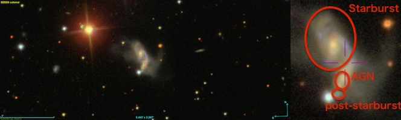
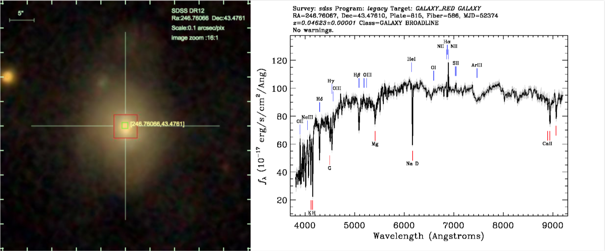

Current Research
using Latte simulations to analyze the formation and evolution of stellar halo
Fig: Mock galactic (Aitoff) projection of a Latte simulation, as seen from a star 10 kpc from the center of the simulated galaxy.
LATTE is an extension of the FIRE-II project, which develops cosmological simulations of galaxy formation and simulates Milky Way-like galaxies at ultra-high resolution, aiming to address those key problems in the near-field cosmology.
Video: An outflow event in stars (left) and gas (right) developing in halo m12w (one of the runs in LATTE) over a ~31 Myr time period in a 20 kpc * 20 kpc box. The left one is mock Hubble Space Telescope u/g/r composite video created as described in Hopkins et al. (2017). In the right one, magenta is cold molecular/atomic gas (< 1000 K) and green is warm ionized gas (10^4 − 10^5 K). We see that stellar outflows develop along with cold-gas outflows, as stars form from compressed gas that has been accelerated outward at the edges of evacuated super-bubbles.
We use LATTE simulations to study the formation and evolution of Milky Way-like galaxies, especially their stellar halos. We find that a significant fraction (5 − 25%) of the outer (50 − 300 kpc) stellar halo in each system originated in stars formed in outflows. These stars are born in the main galaxy with large (> 200 km/s) radial velocities during bursty star formation episodes; they originate from dense molecular outflows that go unstable to star formation just after being accelerated in super-bubble winds. The majority of outflow stars remain bound and fall back with orbital properties similar to the rest of the stellar halo at z = 0.
At the solar location, we find that up to ∼ 10% of all kinematically-identified halo stars were born in outflows; the fraction rises to as high as ∼ 40% for the most metal rich local halo stars ([Fe/H] > −1.0). In the outer halo (r > 50 kpc), outflow stars are more spatially homogeneous, metal rich, and alpha enhanced than accreted stars. We conclude that the Milky Way stellar halo could contain local counterparts to stars that are observed to form in molecular outflows in distant galaxies, and thus may provide a new, “near-field" approach to constraining feedback and outflow physics. Stellar outflows of this kind may also provide a source for extreme-velocity stars in the Galaxy.
Paper in preparation.
Past Research
Emission Line Analysis of an Interacting Galaxy Pair J0754+1648
Fig: Galaxy J0754+1648 from SDSS9.
Galaxies with strong Balmer absorption lines but no [OII] or H emission are called E+A galaxies, which are also interpreted as post-starburst galaxies. We used the data collected from the WIYN observatory by the brand-new integral field unit (IFU) called HexPak to study the interaction between the AGN and the host galaxy. Our object galaxy showed a post-starburst signature identified by SDSS, starburst region, along with a strong radio source. We aimed to find out if there is a connection between the AGN and the post-starburst region.
Because of the low signal-to-noise ratio, we were not able to detect any signs of AGN outflows. But we saw a large ionized bar-like area of gas that could be due to the AGN. We were still not sure about the truncation mechanism of starburst but the possibility of AGN outflows being responsible for the exhaustion for gas may be higher in our object galaxy.
Another important part about this work is the commissioning of the new IFU device. We developed a viable method to produce the noise map entailed by the spectral fitting with the simple stellar population models.
Click here to learn more details about this work.
Integrated field spectroscopy of E+A (post-starburst) galaxies with MaNGA:
The origin of E+A galaxies

Fig: Optical g,r,i band image and spectrum of galaxy J162702.55+432833.9 from SDSS DR4.
We used data from MaNGA survey to study the properties of post-starburst galaxies. MaNGA is one of the three core programs in the SDSS-IV project, provides maps and measured gradients of the composition and kinematic structure of stars and gas.
We mapped different properties of two galaxies whose post-starburst regions are both in the galaxy center. Along with the disturbed morphology, our results are consistent with the merger/interaction origin of E+A galaxies. We divided the galaxy into different regions and combined spectra, forming a BPT plot to see nearly all parts of the galaxy fall into the LINERs region.
These findings are consistent with a simple scenario that the galaxy accreted a gas-rich dwarf galaxy, inducing the central starburst and shock wave. After the starburst stopped, the galaxy involved into post-starburst phase. And AGN didn’t seem to play an important role during this process.

{kind=link}